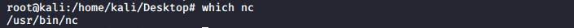

which
which returns the pathnames of the files (or links) which would be executed in the current environment. It does this by searching the PATH for executable files matching the names of the arguments.
